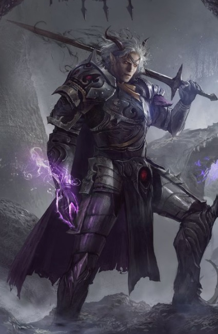

Güçlü dini inançlarından gelen büyülerini, kas gücüyle birleştirmiş kem yürekli savaşçılardır. Kardeşlik anlayışı bu sınıfta çok gelişmiştir.
Kendi sınıfından olanları canları pahasına korurlar. Adboların azılı düşmanlarıdırlar.
Seviye 1
Balta: Balta kullanabilme yeteneğidir.Hançer: Hançer kullanabilme yeteneğidir.
Döven: Döven kullanabilme yeteneğidir.
Topuz: Topuz kullanabilme yeteneğidir.
Teber: Teber kullanabilme yeteneğidir.
Kalkan bloğu: Kurbanın saldırısını kalkanla karşılamak için geliştirilen yetenek. (otomatik)
Mızrak: Mızrak kullanabilme yeteneğidir.
Kılıç: Kılıç kullanabilme yeteneğidir.
Kırbaç: Kırbaç kullanabilme yeteneğidir.
Omuz: Hasar vermeyi ve düşürmeyi hedefleyen yetenek. Çok etkilidir.Muhakkak pratik edilmesi gerekir. Omuz yiyen karakter 2 tur boyunca yerden kalkamaz ve büyü yapamaz. Omuz atan karakter 2 tur boyunca otomatik dövüşmekten başka birşey yapamaz. Omuz atmaya çalışan kişi yere düşebilir. Uçanlara, çeviklere omuz atmak zordur. Yapılı ve ağır birine omuz atmak bir binaya omuz atmaya benzeyebilir. (omuz
Kapıkırma: Belirtilen yöndeki kapıyı (veya belirtilen isimdeki kapıyı)omuz atarak kırmayı hedefleyen yetenek. (kapıkır
Anımsa: Ait olduğunun dinin tapınağına dönüş komutudur. Seviye 10a kadar geçerlidir. (anımsa)
Parşömen: Parşömen okuma yeteneğidir.(oku yazdıktan sonra okunacak parşömenin adı yazılır.)
Değnekler: Değnek kullanabilme yeteneğidir.(otomatik)
Seviye 3
Toz atma: Yerdeki tozu-kumu seri bir ayak darbesiyle havalandırarak rakibin gözlerine atmayı hedefleyen, rakibi kısa süreliğine körleştiren yetenek. (toz)Yüksek zarar: Kurbana verilen zararı artırmayı sağlayan yetenek. (otomatik)
Seviye 5
Karşılama: Kurbanın saldırısını silahla karşılamak için kullanılan yetenek. (otomatik)Seviye 7
Hızlı iyileşme: Yaşam puanının daha hızlı yenilenmesini sağlayan yetenek. Bu yetenek yürürken de, dinlenirken de, uyurken de çalışır.(otomatik)Seviye 8
Pazarlık: Alışverişlerde alırken ucuza alma, satarken pahalıya satma yeteneğidir. Bu yetenek kullanılarak dükkan sahibi fiyat konusunda ikna edilmeye çalışılır. Hırsızlar pazarlık konusunda doğuştan yeteneklidirler. (otomatik)Seviye 9
Tekme: Savaşçıların hedeflerine güçlü bir tekme atma yetenekleri. Düşmana geçikme verir.(tekme)Seviye 10
Çelme: Rakibin bacaklarına hızlı bir vuruş yapılarak onu yere çalmayı amaçlayan yetenek. Başarılı bir çelmenin ardından rakip yere düşer ve 2 tur boyunca kalkamaz. Yere düşen kişinin dövüş becerisi kısmen azalır ve kaçması önlenir. İri cüsseli canlıları yere çalmak kolay olmaz, çevik canlılar ise çelme hamlesini kimi zaman kolayca savuşturabilirler. (çelme)Seviye 14
İkili hamle: Dövüşlerde bir turda iki hamle yapabilmek için gerekli yetenek. (otomatik)Seviye 15
Meditasyon: Hızlı iyileşmeye benzer. Yöntem olarak uyurken veya dinlenirken zihin yoğunlaşması kullanılır ve büyü gücünün (mana) yenilenmesi sağlanır. (otomatik)Seviye 18
Çıplak el: Silahsızken de etkili dövüşebilmeyi sağlayan yetenek. (otomatik)Seviye 20
İrfan: Bilgelik vasıtasıyla herhangi bir eşyanın niteliklerini öğrenme yeteneğidir. Tanımlama büyüsüne benzer. (irfanSeviye 21
Silahsızlandır: Rakibin silahını saldırı esnasında yere düşürme yeteneğidir. (silahsızlandır)Sıyrılma: Saldırının vuracağı noktadan ayrılma prensibine dayanan tekniktir.Hem saldıran hem de sıyrılmayı deneyen için çeviklik değeri çok önemlidir.Savaşçılar sıyrılma yeteneğinin ustalarıdırlar.(otomatik)
Seviye 26
Üçlü hamle: Dövüşlerde bir turda üç hamle yapabilme yeteneği. (otomatik)Seviye 29
Kalkan yarma: Dövüş sırasında rakibin kalkanını yarmak için kullanılır. (kalkan yarma)Seviye 34
Silah yarma: Dövüş sırasında rakibin silahını yarma yeteneği. (silah yarma)Seviye 48
İkinci silah: İki silahı aynı anda (verimli şekilde) kullanabilmek için geliştirilen yetenek.(otomatik)Seviye 55
Yarma: İlk vuruşta yüksek miktarda zarar vermeyi sağlayan yetenek. (yarmaSeviye 56
Çapraz blok: Kurbanın saldırısını çapraz blokla karşılayabilmek için gerekli yetenek. (otomatik)Seviye 61
İkincil hamle: Bir silahla iki vuruş yapabilmeyi sağlayan yetenek. (otomatik)Seviye 1
Fişek: Düşamana zarar veren bir büyüdür. Büyünün seviyesi yükseldikçe vereceği zarar artar.(büyü fişek düşman_adı)Seviye 5
Yönelim saptama: Hedefin yönelimini saptamaya yarar.(büyü yönelim hedef_adı)Seviye 6
Ayaz: Zarar vermenin yanısıra kurbanın gücünü de azaltan büyü. (büyü ayaz düşmanadı)Seviye 7
Nakil: Büyüyü yapanı diyarın rastgele bir odasına nakil eder.(büyü nakil)Seviye 9
Görünmezlik: Hedefin görünmez olmasını sağlayan büyü.(büyü görünmezlik)Seviye 11
Hafif tedavi: İyileştirme büyüsü.(büyü 'hafif tedavi' hedef_adı)Seviye 13
Görünmezi saptama: Büyücünün görünmezleri saptamak için kendi gözlerine yaptığı büyüdür.(büyü 'görünmezi saptama')Yıldırım: Kurban üzerine zarar uygular. Büyünün seviyesi yükseldikçe vereceği zarar da artar.(büyü yıldırım düşman_adı)
İyiden korunma: Kişiyi iyi yönelimlilere karşı korur.(büyü iyiden)Seviye 14
Körlük: Kurbanı kör etmek maksadıyla kullanılır.(büyü körlük düşman_adı)Seviye 15
Zehir: Kurbanı zehirlemeyi sağlayan yetenek.(büyü zehir düşman_adı)Seviye 18
Lanet: Bir eşyayı veya kurbanı lanetlemeyi sağlayan büyü.(büyü lanet düşman_adı, büyü lanet nesne_adı)Seviye 25
Uyku: Kurbanı uyutmak için kullanılır.(büyü uyku düşman_adı)Seviye 26
Yaşam kurut: Kurbanın yaşam puanını emerek zarar vermeyi sağlayan büyü. (büyü 'yaşam kurut' kurban_adı)Seviye 27
Zihin yosunu: Kurban üzerine zarar uygular. Büyünün seviyesi yükseldikçe vereceği zarar da artar.(büyü 'zihin yosunu' düşman_adı)Seviye 28
Yavaşlatma: Kurbanın çevikliğini azaltmak için kullanılır.(büyü yavaş düşman_adı)Seviye 29
Zarar: Kurbana zarar vermeyi sağlayan saldırı büyüsü.(büyü zarar düşman_adı)Seviye 30
İyilik defet: İyi varlıklara zarar veren büyü.(büyü iyilik düşman_adı)Seviye 35
Gizemli düş: Odayı uyutucu bir gizemle doldurur.(büyü gizem)Seviye 38
Teshir: Hedefi bir çeşit hipnozla kontrol altına almayı amaçlayan büyü. Büyü başarıya ulaştığında büyücü kurbanına EMRET komutuyla hükmedebilir.(büyü teshir kurban_adı)Seviye 39
Ruh bağı: Kurbanın ruhunu kendisine bağlayarak onu kölesi haline getirir. (büyü 'ruh bağı' kurban_adı):Seviye 40
Zihin bükümü: Kurban üzerine zarar uygular. Büyünün seviyesi yükseldikçe vereceği zarar da artar.(büyü 'zihin bükümü' düşman_adı)Seviye 42
Sağırlık: Kurbanı sağır etmeyi sağlayan büyü.(büyü sağır düşman_adı)Seviye 46
Veba: Kurbanın büyülü veba hastalığına yakalanmasına neden olur. Veba hastalığı kurbanın gücünü azaltır ve tedavi edilmezse kısa sürede ölümle sonuçlanır. Vebanın bir diğer özelliği ise bulaşıcı bir virüs yaymasıdır.Kalabalık bölgelerde dolaşan bir vebalı birçok kişinin bu hastalığı kapmasına neden olabilir.(büyü veba düşman_adı)
Seviye 50
Ruhani yumruk: Kurban üzerine zarar uygular. Büyünün seviyesi yükseldikçe vereceği zarar da artar.(büyü 'ruhani yumruk' düşman_adı) Çağrı: Uzaktaki bir oyuncuyu ya da mobu büyüyü yapanın yanına transfer etmeyi sağlar.(büyü çağrı çağrılanın_adı)Seviye 53
Kasırga: Odada bulunanların tümüne zarar veren bir kasırga yaratır.(büyü kasırga)Seviye 56
Alev topu: Hedefe alevden bir top göndererek ona zarar vermeyi amaçlayan büyü.(büyü 'alev topu' düşman_adı) :Seviye 58
Ölüm zehri: Odayı zehirlemeyi sağlayan büyü.(büyü 'ölüm zehri')Buztopu: Kurban üzerine zarar uygular. Büyünün seviyesi yükseldikçe vereceği zarar da artar.(büyü buztopu düşman_adı)
Seviye 62
Uyuşukluk sisi: Odayı uyuşukluk yaratıp kişileri yavaşlatan bir sis ile doldurur.(büyü uyuşukluk)Bayıltma sözcüğü: Çok güçlü büyücülerin kurbanlarını bir sözcükle bayıltmasını sağlar.(büyü 'bayıltma sözcüğü')
Seviye 64
Kara ölüm: Odaya veba büyüsü atmayı sağlar. Veba odayı bir süre etkiler ve bu süre zarfında odada bulunanlar, odadan geçenler vebanın etkisine girebilir. (büyü 'kara ölüm')